task
Rethink the Dolyami widget in the Lamoda checkout and the first onboarding screen so the user understands in 3 seconds: this is not a loan, it is free, and it is fast.

Rethink the Dolyami widget in the Lamoda checkout and the first onboarding screen so the user understands in 3 seconds: this is not a loan, it is free, and it is fast.
Research, segmentation, JTBD, competitor analysis, hypothesis prioritization, interviews, flow redesign and interface concept for the payment scenario.
Dolyami is a BNPL service from T-Bank. It splits a purchase into four equal payments every two weeks, without interest.
The service works in checkouts of Lamoda, Golden Apple, Letual and other stores, but users still read installments through the lens of loans.
Users saw the “Pay with Dolyami” button, but were afraid to click: hidden interest, credit history, passport checks and fines.
The key risk was drop-off at payment-method selection, where fear appeared before the product could explain itself.
“I don’t want to get involved with loans for sneakers. What if this goes to the credit bureau?”
“Now they’ll force me to take a photo of my passport and fill out a form. It’s easier to pay with a card.”
“What if I forget when the next payment is? Will I be fined?”
After service fees appeared, users started reading them as hidden overpayment and compared Dolyami with “0%” competitors.
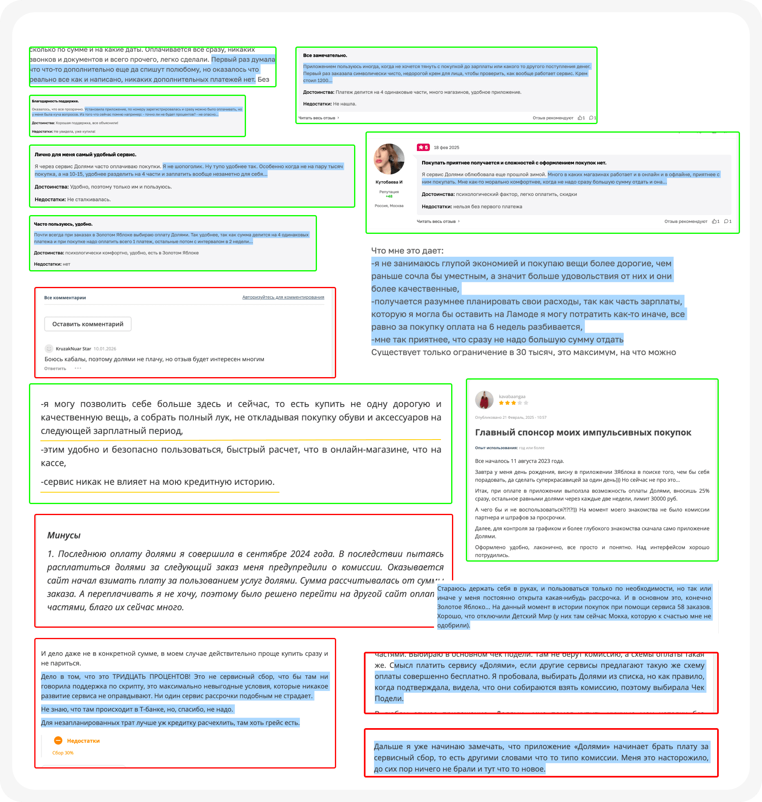
Looks for a catch, reads reviews, worries about hidden charges and wants to pay in parts without feeling in debt.
Plans expenses and compares scenarios: if Dolyami charges a fee and competitors do not, they leave.
Makes decisions quickly. Any delay, complicated flow or passport requirement destroys the purchase impulse.
When I split a fashion purchase, I want control and clarity, so I can buy now without feeling trapped by a financial product.
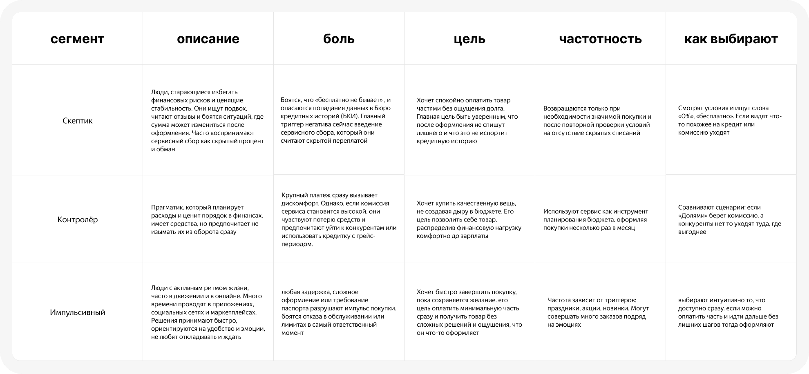
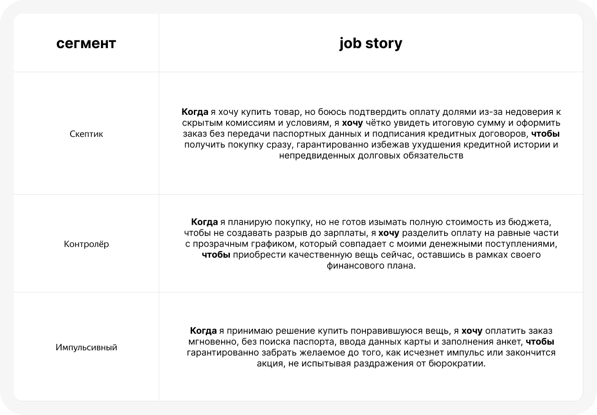
Shows commission in rubles, not as a percentage. The toggle turns Split on directly in the cart.
Sells the whole BNPL category, while Dolyami’s “service fee is possible” reads like a warning.
Uses accordion mechanics: four payments are visible immediately in the payment-method list.
Minimizes entry: first payment from 1 ruble and a visible “0%” badge on the free plan.
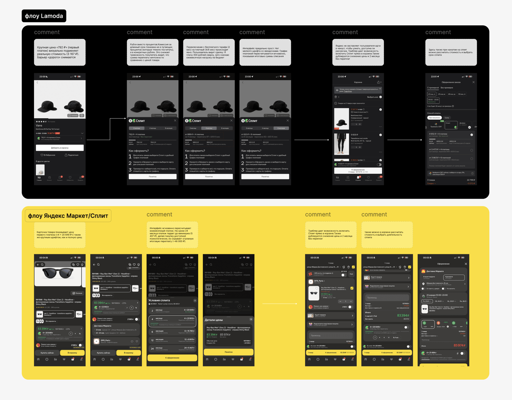
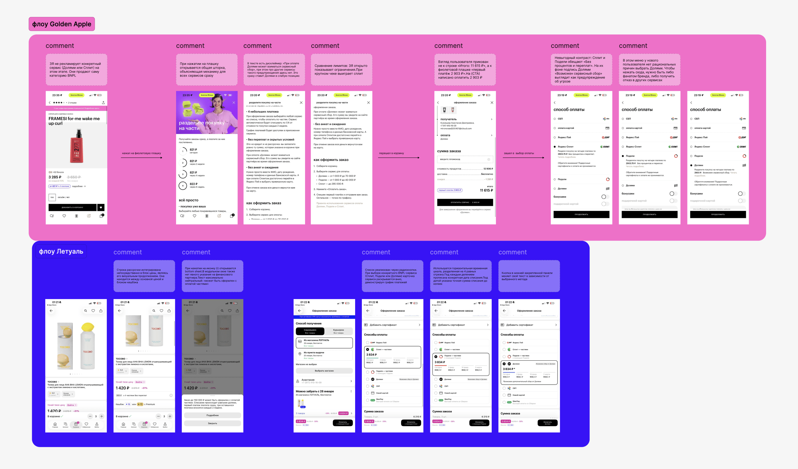
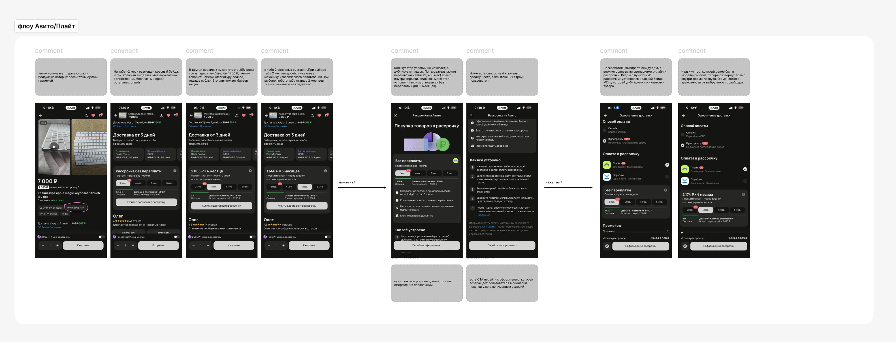
Skeptic. Dolyami felt like a “debt trap”; speed made the flow feel suspicious, not convenient.
Anxious avoider. She reacted calmly to “installment plan” and trusted the service more when T-Bank was explicit.
Pragmatist. Uses BNPL to buy more at once, but worries that the product sounds financially shameful.
Price transparency, visual steps, bank branding and anti-bureaucracy were stronger than a promise of maximum speed.
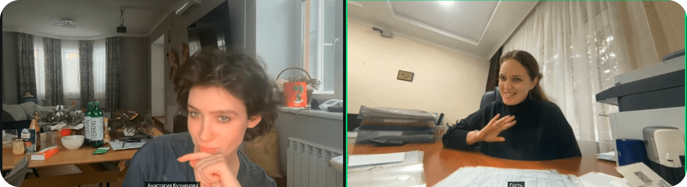
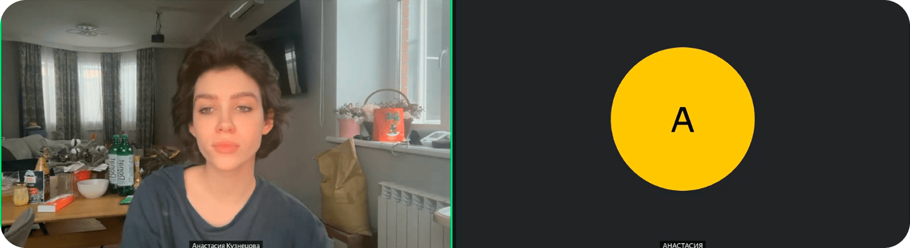
A compact badge on the product card and a bottom sheet with schedule, conditions and fear removal.
For authorized users, pre-filled fields and a “loan agreement is not drawn up” message remove the microloan association.
Quick bank-pay buttons are primary; manual card entry remains as a fallback, not the main scenario.
Fee explanation, order composition and promo code are available in bottom sheets without leaving the payment screen.
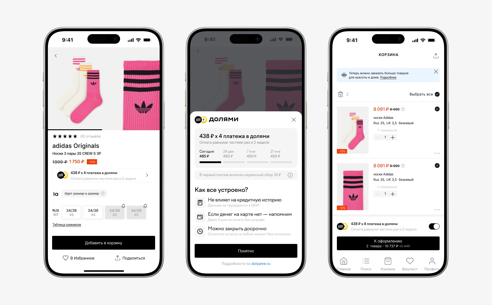
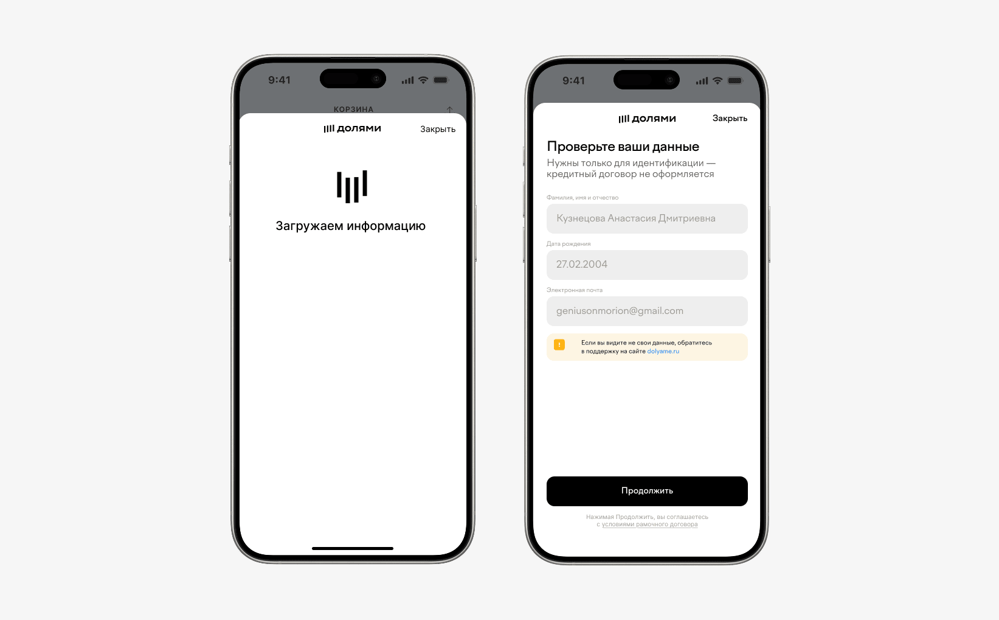
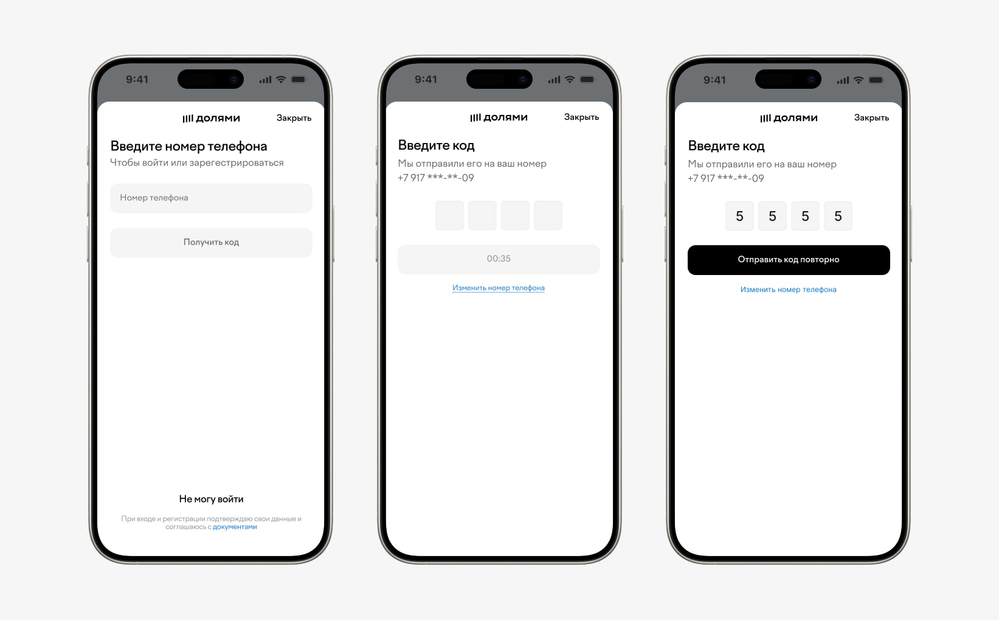
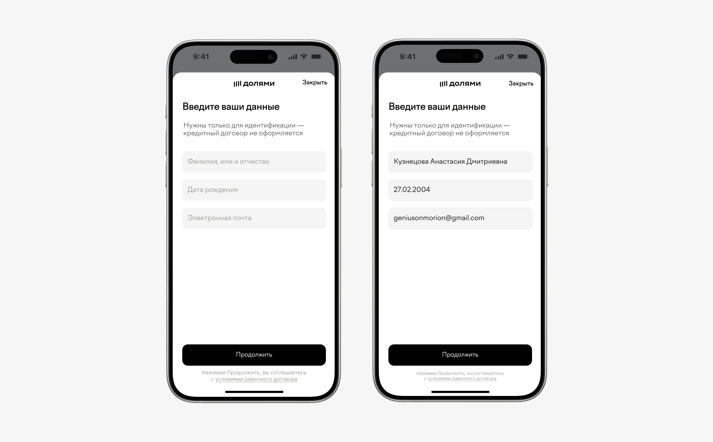
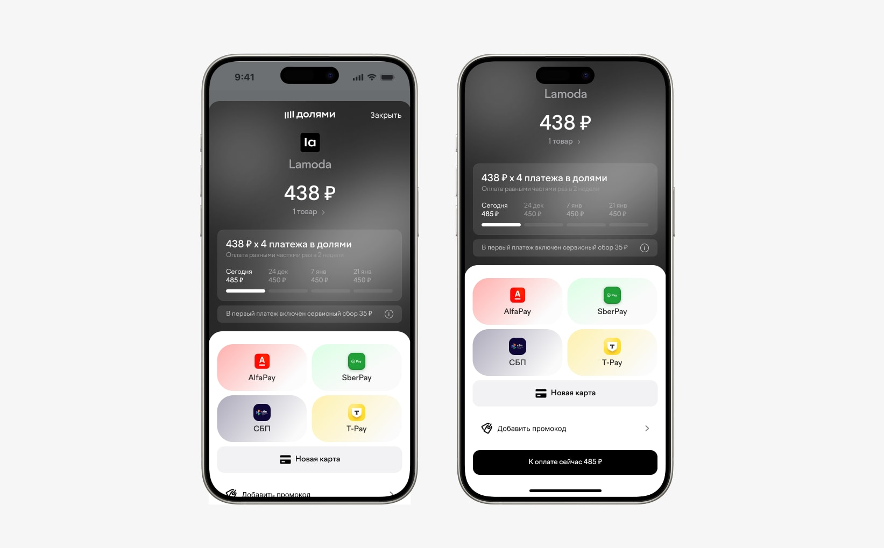
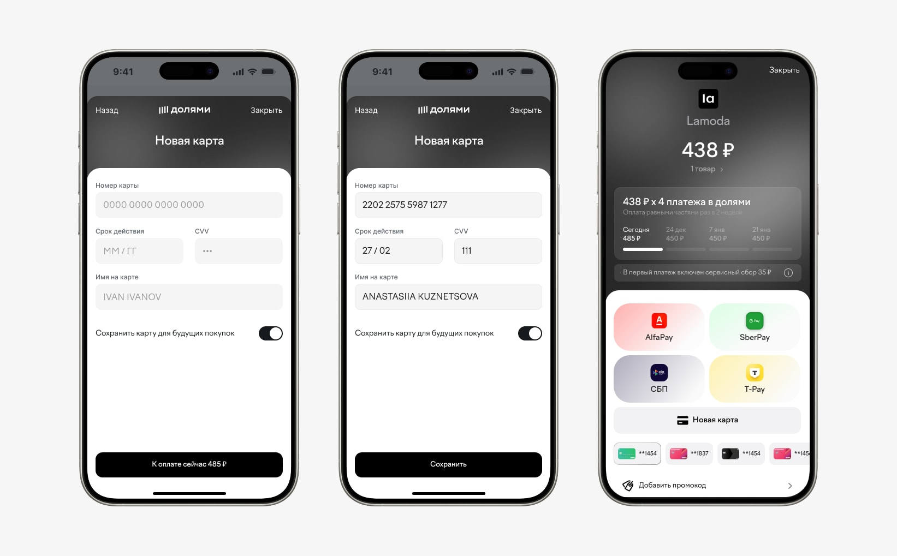
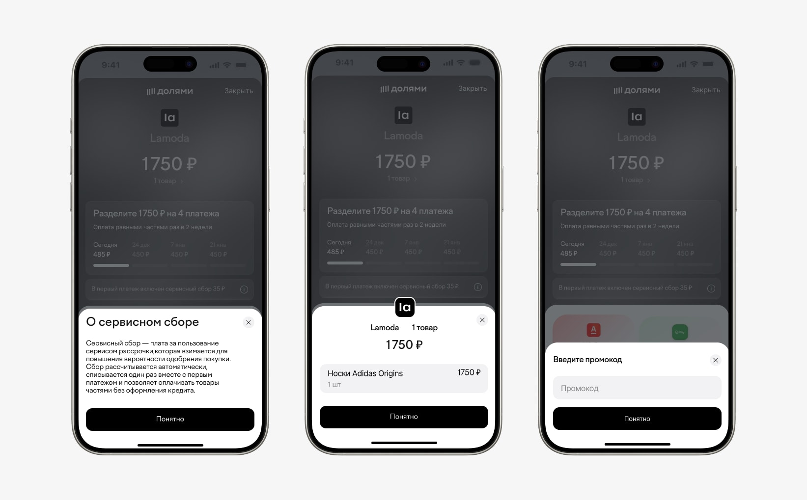
Users’ fears are not about the interface only, but about the category. As long as the widget looks like a bank, button redesign will not help.
“Simplicity and speed = conversion” was not confirmed. Too much speed raised suspicion, so the concept needed smart friction.
Dolyami loses not in product mechanics, but in communication: competitors promise “no interest,” while Dolyami warns about fees.
ICE prioritization helped cut off weaker hypotheses and keep the redesign focused on trust, clarity and controlled autonomy.